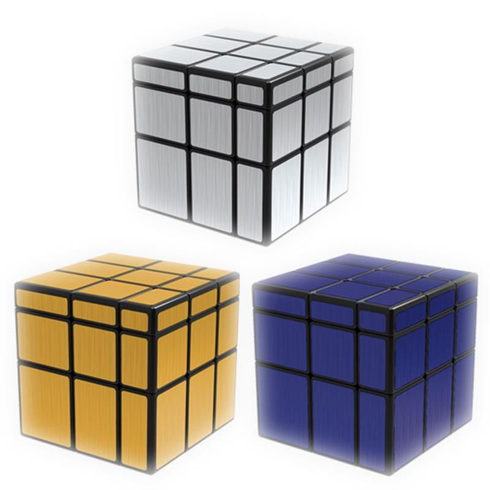

Welcome to Rubiko-kubas
Rubiko kubas - išsamiai DELFI.lt
2020.10.29 03:53
Spalio 29 d., ketvirtadienis | Vilnius 11 Kaunas 10 Klaipėda 10 Šiauliai 8 Panevėžys 11 Alytus 10 Nida 9 Raseiniai 9 Utena 11 Mažeikiai 9 Biržai 10 Kėdainiai 11 Kiti miestai Paieška | Pranešti naujieną | LT RU EN | Reklama Kontaktai | Statistika | + Apie Delfi plius Prisijungti Naujausios Skaitomiausios Lietuvoje Sportas Orai Kriminalai Užsienyje Veidai Horoskopai Gyvenimas Mokslas Verslas Daugiau Sveikata Kultūra Auto M360 Politiko akimis Jaunimas Pilietis Nuomonių ringas Multimedija Teisė Medijos Karas Propaganda PT Melo detektorius Demaskuok Ačiū už pamokas Temos | Delfi Video
Naujienos
Naujausios Skaitomiausios Lietuvoje Sportas Kriminalai Užsienyje Veidai GyvenimasVerslas Mokslas Kultūra Sveikata Auto Pilietis Miestai M360 Politiko akimis
Delfi Video
Tiesioginės transliacijos Delfi Diena Delfi Dėmesio centre LaidosNaudinga
Orai Horoskopai Receptai TV Programa Valiutų kursaiDelfi projektai
Multimedija Idėja Lietuvai Kablys Smalsūs EP Atsakingas požiūris Atgal į gyvenimąDelfi kanalai
Agro Būstas Moterys Šeima Kelionės Grynas Stilius Maistas Letena Karjera Bored Panda Sek DelfiMobilusis Delfi
Naujausios žinios Naujienų temos Delfi Temos Rubiko kubas
Rubiko kubas
Dėl šių žaidimų seniau vaikai ėjo iš proto: ar pamenate juos? (28) 480
Laikas nestovi vietoje, o technologijos – nuolat keičiasi. Mažus vaikus auginantys tėvai puikiai žino, kaip jų vaikų žaislai skiriasi nuo tų, su...
Eurolyga COVID-19 apkasuose: laisvai stumdomas kalendorius ir komandos-legionierės (10)
Pustrečio mėnesio galimybių pratęsti sezoną ieškojusi Eurolyga jų taip ir nesurado. Dabar priešakyje – keturi mėnesiai, per kuriuos reikės...
Artimasis iš rankų nepaleidžia telefono: profesorė pateikė grėsmingus ženklus (27) 393
Kaip manote, kokios dvi prekės yra pačios perkamiausios pasaulyje? Pirmoje vietoje – rubiko kubas, antroje Iphone telefonas, sako Vilniaus universiteto...
Rubiko kubo savininkas pralaimėjo autorinių teisių kovą Europoje (4)
Rubiko kubo prekės ženklo savininkas, siekiantis atgauti Europos Sąjungos prekės ženklo teises į legendinį galvosūkį, bylą pralaimėjo.
Krzysztof Obloj. Aistra veikti ir disciplina – laimėjimų versle elementai
Aistra veikti verslo pasaulyje gali būti ir motyvuojantis, ir ribojantis veiksnys. Jis reikalingas savo įmonę pradedantiems, tikslo siekiantiems ir toliau...
JAV Senatas priėmė istorinį mokesčių sistemos reformos įstatymą (15)
Ar dar pamenate šiuos žaislus, kurie buvo tapę tikra manija? (19) 802
LKL savaitės apžvalga: ryškėjantys pirmenybių lyderiai (3)
Rubiko kubo išradėjas Paryžiuje stebėjo šio galvosūkio pasaulio čempionatą
Pasiektas naujas Rubiko kubo rekordas (3)
Teismas: Rubiko kubas nėra prekės ženklas
Rubiko kubo Europos čempionas kubą surinko per 7,88 sekundės (2)
Antgamtinės galios: žonglierius ore sudėjo tris Rubiko kubus (21)
Iš koto verčiančios optinės iliuzijos (8)
Nepatikėsite, per kiek laiko šįkart sudėtas Rubiko kubas (9)
Indas pasiekė Rubiko kubo dėliojimo rekordą (6)
Inscenizavo pabėgimą iš namų (1)
Rubiko kubo gerbėjams - „Google“ dovana (3)
Rubiko kubas švenčia 40-metį: pagamintas kubas iš brangakmenių (2)
Pademonstravo neįtikėtiną rankų ir kojų pirštų miklumą (8)
Paskutinis „Alfa Romeo“ šansas? (109)
13-metis kaunietis Rubiko kubo varžybose savo pasirodymais stebina užsieniečius (15)
„2 minutės šlovės“: Rubiko kubas sudėtas per 24 sekundes (15)
Pasidalink piliečio istorijaAr Rubiko kubas Lietuvoje populiarus? (10)
Kaune kyla naujasis Rubiko kubo talentas
Kultūros dieną – šiuolaikinės taikomosios dailės paroda (1)
Vokietis ketina bėgdamas maratoną sudėti 100 Rubiko kubų (1)
Rubiko kubo „mįslei“ įveikti užtenka 20 žingsnių (40)
Penkiametis dalyvauja Prancūzijos Rubiko kubo čempionate (8)
1 2 | Populiariausi straipsniai ir video Sekite DELFI REKLAMA KONTAKTAI PRIVATUMAS KARJERA en.delfi.lt ru.delfi.lt pl.delfi.lt delfi.ee rus.delfi.ee delfi.lv ru.delfi.lv UAB DELFI Gynėjų g. 16, 01109 Vilnius +37052045400 info@delfi.lt © 1999-2020 DELFI. Visos teisės saugomos .